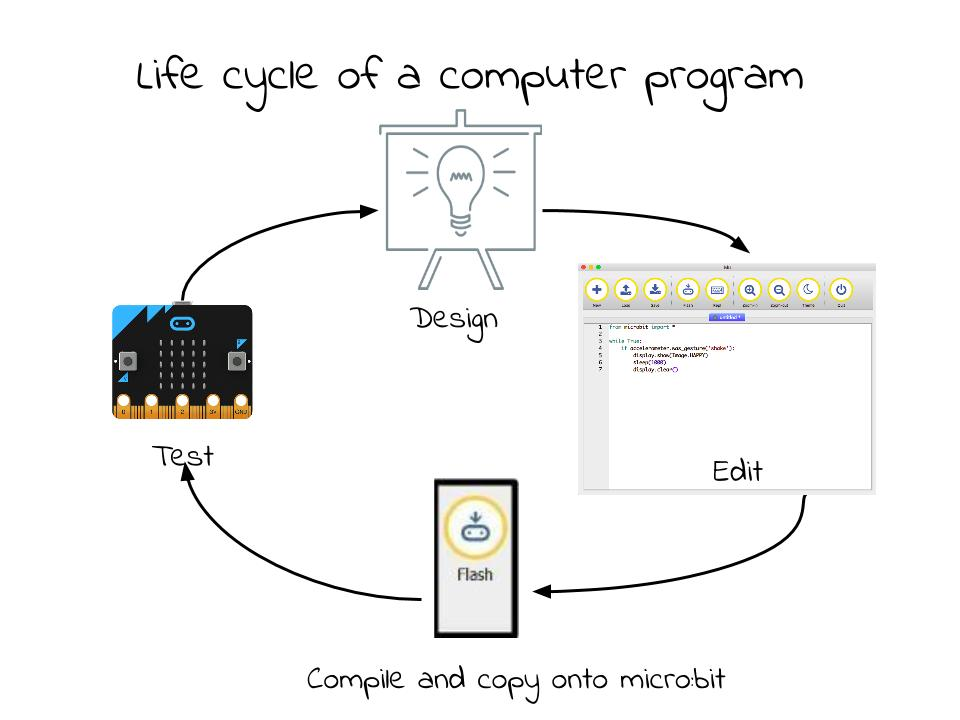
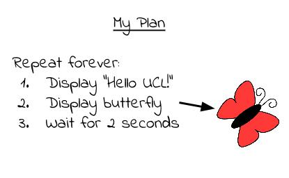
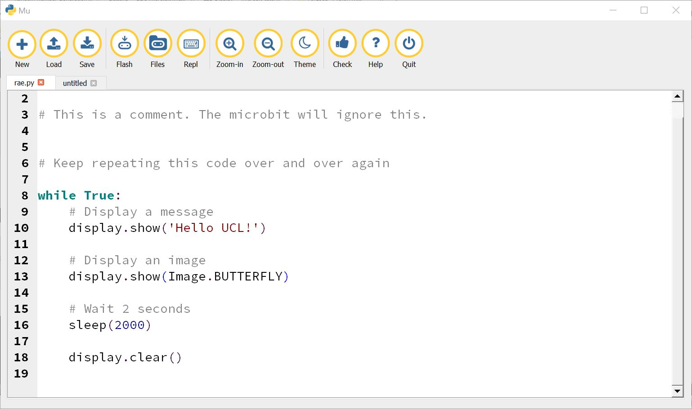

Micro:bit - Getting Started¶
- The BBC micro:bit is a tiny computer that you can use to create all kinds of projects from robots to musical instruments – the possibilities are endless. Let’s take a look at the features that you can use in your designs:
- 25 red LED lights that can flash messages.
- Two programmable buttons (A and B) that can be used to tell the microbit when to start and stop things.
- A thermistor to measure the temperature.
- A light sensor to measure the change in light.
- An accelerometer to detect motion.
- A magnetometer to tell you which direction you’re heading in.
- A radio and a Bluetooth connection to interact with other devices.

In this tutorial you will create your first micro:bit program; after that, well we’ve listed a few ideas but it’s really up to you.
Your First Program¶
Coding using the micro:bit is composed of these 4 steps. You can expect to go around the loop quite a few times before you get your code working.
Design the Code¶
First of all you are going to write a program to display the message “Hello World from UCL!” followed by an image on the display of your micro:bit. There’s not much planning and design to do here, but just so that you understand what a plan might look like, here is mine:
Write the Code¶
We will use a special text editor to write our programs, it looks like the one shown here:
Let’s go through this line-by-line:
while True:
This means do something (whatever follows this statement and is indented) forever and ever and ever. This is called a loop, it’s a bit like a gliffy that’s stuck on repeat. True and False have a special meaning in python. True is always, well True. The rest of the program is straightforward:
from microbit import *
while True:
display.show('Hello UCL!')
display.show(Image.BUTTERFLY)
sleep(2000)
This displays Hello UCL on the LED display one character at a time and then shows the butterfly. You might be wondering why we’ve asked the
micro:bit to sleep for 2000! This value is in microseconds so we’ve really only asked it to sleep for 2 seconds. That will give us enough time to see the image before the micro:bit starts all over again.
Upload the Code¶
Final checks. Is your micro:bit connected to your computer? Yes? Then press the flash button:

Make a change¶
Change the text that is displayed on the screen and make it scroll across the LED display. You can do this by changing the word show to scroll. Don’t forget to save your program and remember to flash the new code to the microbit.

You have written your first program. Carry on and see what else you can do with the micro:bit.